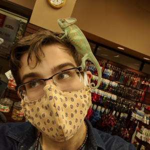

Welcome to Anthony's Website!
{kind=link}
Hello, I'm Anthony! I moved to Canada when I was five years old, and
have been in Sault Ste. Marie since then. In my spare time I enjoy
playing
video games, taking care of my animals, as well as
studying/cultivating mushrooms!
I also listen to a lot of music, and have a small collection of vinyl
records spanning many genres and generations. I also play a bit as
well, the
guitar as well as the piano. I listen to all genres of
music, but at the moment I've been particularly enjoying Classic Rock
as well as Indie Rock.
| Term | Course | ||
|---|---|---|---|
| Code | Name | Credits | |
| Fall | CSD110 | Introduction to Programming | 4 |
| CSD111 | Computing Environments | 3 | |
| CSD112 | Introduction to Web Development | 4 | |
| CMM115 | Communications I | 3 | |
| MTH123 | Computer Mathematics | 3 | |
| TNY130 | Technology in Society | 3 | |
| Winter | CSA103 | Business Applications I | 4 |
| CSD121 | Programming Concepts | 4 | |
| CSD122 | Hardware, OS, and Networks | 5 | |
| CSD123 | Databases I | 4 | |
| CDS124 | Systems Analysis and Design | 3 | |
| Total | 40 | ||
My Favorite Things
Recent Games
- Valorant
- Rimworld
- Humankind
Haiku
Creatures big and small
Fight in arenas worldwide
Return to pockets
Pokemon by